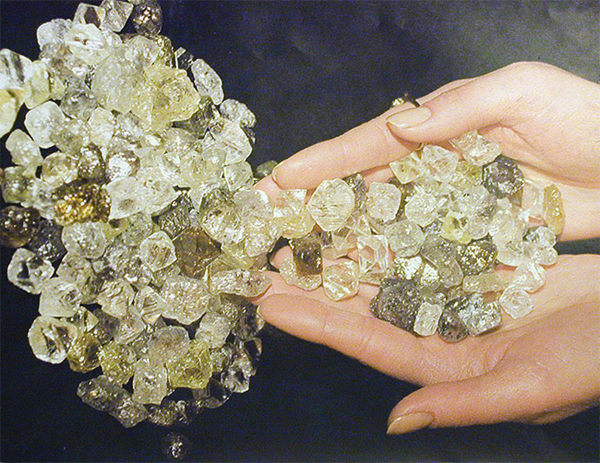
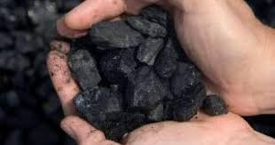

Корисні копалини

У її надрах відкрито 1 159 родовищ і проявів 30 видів різноманітних корисних копалин: Петриківське родовище заліза, Троповське родовище апатиту, Лукашівське родовище флогопіту, Слобідське родовище гранату і Бахтинське родовище флюориту, а також унікальні родовища граніту й поклади каоліну, десятки родовищ торфу.
